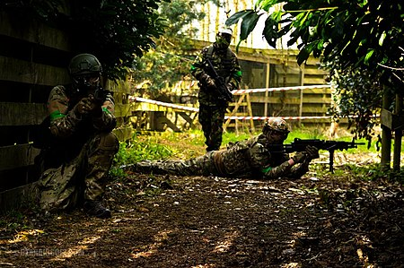

Airsoft , konsept olarak paintball'a benzer, rakip takımlardan katılımcıların, airsoft silahları adı verilen düşük güçlü düz delikli hava tabancalarından fırlatılan katı yuvarlak plastik toplarla birbirlerine vurarak rakiplerini ortadan kaldırdığı rekabetçi bir spordur . Airsoft peletlerinin paintball gibi hedefleri gözle görülür şekilde işaretlememesi ve bu nedenle sporun büyük ölçüde bir onur sistemine dayanması nedeniyle paintballdan farklıdır. Vuruş yapan bir oyuncunun, başka birisi bunun olduğunu görse de görmese de, kendisini oyun dışı ilan etme etik görevinin olduğu yer. Airsoft silahlarının çoğu, gerçek ateşli silah aksesuarlarıyla uyumlu montaj platformlarına sahip şarjör beslemelidir (paintball işaretçilerinin yaygın olarak tepeye monte edilen pelet yükleyicisinin aksine) ve görünüş olarak gerçek silahlara daha çok benzeme eğilimindedir, bu da onları askeri simülasyon ve tarihsel için daha popüler hale getirir. canlandırmalar _ Airsoft peletlerinin daha fazla sağlamlığı, daha iyi güç santrallerinin ve gelişmiş dış balistik için hop-up cihazı gibi aparatların kullanılmasına da izin vererek, oyunu gerçek silahlı çatışmalara daha doğru bir şekilde benzetir. Ayrıca, sıradan oyuncuların katılması paintball'dan çok daha ucuzdur.
Airsoft oyunu, tıpkı paintball gibi stil ve kompozisyon bakımından farklılık gösterir ve hem kapalı hem de açık sahalarda oynanır. Sahadaki durumlar, hedeflere ulaşmak için sıklıkla gerçek hayattaki askeri taktiklerin kullanılmasını içerir ve katılımcıların gerçekçilik duygusu için gerçek askeri ve polis teşkilatlarının üniformalarını ve teçhizatını taklit etmeleri alışılmadık bir durum değildir. Oyunlar normalde eğitimli saha yöneticileri tarafından denetlenir (ve bazen hakemlik yapılır) ve oyuncuların airsoft silahları, güç çıkışı kısıtlamalarını uygulamak için genellikle bir kronograf aracılığıyla kontrol edilir.
Şu anda airsoft sporu için resmi bir ulusal veya uluslararası yönetim organı bulunmamaktadır . Rekabetçi turnuvalar genellikle özel kulüpler tarafından veya meraklılar ve profesyonel / yarı profesyonel ekipler (genellikle "klanlar" olarak anılır) arasında düzenlenir ve etkinlikten etkinliğe değişen kurallar ve kısıtlamalar vardır.
İlk kez popüler hale geldiği Japonya'da hayatta kalma oyunları ( Japonca :サバイバルゲーム, romanlaştırılmış : sabaibaru gēmu ) olarak da bilinen Airsoft , katılımcıların rakip oyuncuları küresel plastik mermilerle etiketleyerek oyun dışı bıraktığı takım tabanlı bir atış oyunudur . airsoft silahları adı verilen düşük güçlü oyuncak havalı tabancalardan .
Konsept ve oyun açısından paintball'a benzemesine rağmen , airsoft peletleri hedeflerinde görünür işaretler bırakmaz ve isabetler her zaman belirgin değildir. Topak darbeleri, açıkta kalan cilt üzerinde küçük morluklar veya izler bırakabilse de (ve bu nedenle koruyucu giysiler hala tavsiye edilmektedir), oyun büyük ölçüde, vurulan oyuncuların dürüstlüğe uygun olarak kendilerini oyun dışı ilan etmelerinin beklendiği bir onur sistemine dayanır. ve sportmenlik.
Kullanılan airsoft silahları çoğunlukla şarjör beslemeli olup, bazılarında Nerf Blaster'lara benzer manuel/ pil motorlu yaylı pistonlu pompalı enerji santralleri veya değiştirilebilir sıkıştırılmış gazla ( örn . propan ("yeşil gaz"), 1,1 ) pnömatik olarak çalıştırılır. ,1,2-tetrafloroetan veya CO 2 ) bidonları. Birçok airsoft silahında ayrıca orijinal ateşli silahlarla uyumlu montaj platformları bulunur.aksesuarlar ve çoğu kozmetik olarak gerçek ateşli silahlara benzer. Bu, onları askeri simülasyon ve tarihsel canlandırmalar için popüler kılar . Daha iyi güvenlik ve daha düşük maliyet nedeniyle kolluk eğitimi gibi bazı alanlarda airsoft ile yürütülen profesyonel silah güvenliği ve silah manipülasyon eğitimleri de vardır. Örneğin Amerika Birleşik Devletleri Sahil Güvenliği , 2018'de eğitim için airsoft'u resmen kabul etti.
Airsoft oynanışı, stil ve kompozisyon açısından farklılık gösterir, ancak genellikle aksiyon çekiminden kısa organize canlı aksiyon rol yapma (LARP) senaryolarına, yakın mesafe savaş çarpışmalarına, askeri simülasyonlara ( MilSim ) veya tarihi canlandırmalara kadar uzanır. Kapalı sahalarda veya açık sahalarda oynanır. Sahadaki savaş durumları, her oyunda belirlenen hedeflere ulaşmak için gerçek askeri taktiklerin kullanılmasını içerebilir . Katılımcılar, modern askeri ve polis teşkilatlarının kullandığı taktik ekipman ve aksesuarları taklit etmeye çalışabilirler. Bir oyun normalde gözetmen ve mareşal olarak hareket eden eğitimli profesyoneller tarafından güvende tutulur.
Oyun oynanmadan önce, bir airsoft silahının namlu çıkış hızı genellikle bir kronograf aracılığıyla kontrol edilir ve genellikle kinetik enerji için bir ölçüm olan saniye başına fit (FPS) veya joule cinsinden ölçülür . Bazı ülkelerde belirli bir hız veya namlu çıkış enerjisi kısıtlaması vardır; yasal namlu çıkış hızının üzerinde ateş eden silahlara el konulabilir. Bazı oyun alanları minimum angajman mesafelerini daha da kısıtlayarak oyuncuların "Bang Bang!" veya diğer oyuncuları yakın mesafeden fiilen vurmak yerine başka bir ifade. Bu, kısa mesafelerde atılan yüksek enerjili peletlerden kaynaklanan olası yaralanmaları önlemek için yapılır.
Bazı ülkelerde , entegre lazerli silah dürbünleri de dahil olmak üzere her türlü lazer nişangâhının kullanımı yasa dışıdır.
Airsoft Japonya'da 1970'lerin başında, kendisi de ateşli bir atış tutkunu olan fotoğrafçı Ichiro Nagata'nın öldürmeyen gerçek mermiler atan model silahlar yapmayı düşündüğü zaman ortaya çıktı. Bu "silahlar", Japonya'nın katı silah kontrol yasalarına uyarken atış meraklılarının ihtiyaçlarına göre uyarlanan yumuşak hava tabancaları olarak ticari markalıydı . "Yumuşak hava" adı, itici gaz olarak kullanılan sıkıştırılmış Freon - silikon yağı karışımına (daha sonra "Yeşil Gaz" olarak bilinen bir propan-silikon yağı karışımı ile değiştirildi) atıfta bulunur ve bu, kullanılan kutulanmış CO2'den önemli ölçüde daha zayıftır.
Uygun hava tabancalarında ( pelet tabancaları ve BB tabancaları ). Başlangıçta hedefe atış yapmak için tasarlanmış olan bu "yumuşak havalı tabancalarda" kullanılan plastik toplar , düşük namlu ağzı enerjisi nedeniyle insanlara yaralanmaya neden olmadan atış yapabilmektedir . Tokyo Marui , şarj edilebilir piller kullanarak sürdürülebilir hızlı ateşlemeye olanak tanıyan devrim niteliğindeki elektrikli motor dişli kutusu tasarımını tanıttıktan sonra , Japonların hayatta kalma oyunları (サバイバルゲーム, sabaibaru gēmu ) dediği gündelik savaş oyunları için yumuşak hava tabancaları popüler hale geldi. Asahi Ateşli Silahlar, 1980'lerde ve 90'larda faaliyet gösteren ve airsoft hobisinin ilk öncülerinden biri olan Japon model bir şirketti.
Airsoft silahları, 1980'lerin sonu ve 1990'ların başında LS adlı bir şirket aracılığıyla Birleşik Krallık'a yayıldı ve ayrı parçalar halinde satıldı ve atış yapabilmeleri için kutudan çıkarılmaları gerekiyordu. Bunlar daha sonra Avrupa ve Kuzey Amerika'nın geri kalanı tarafından kullanılabilir hale geldi ve dünya çapında hızla popülerlik kazandı. 1980'lerin ortalarından beri airsoft, tamamen eğlence amaçlı bir uygulama düşünülerek uyarlandı ve spordan her yaştan insan keyif alıyor. Airsoft kopyaları dünya çapında üretiliyor ve çoğunluğu Doğu Asya'da üretiliyor . Amerika Birleşik Devletleri'ndeki birçok kolluk kuvveti ve askeri birim artık airsoft'ugüç kuvvete taktik eğitim tatbikatları.
Airsoft'ta kullanılan silahlar tipik olarak taklit ateşli silahlar olarak sınıflandırılır. 6 mm veya 8 mm çapındaki mermileri atmak için bir mekanizmaya sahiptirler. Airsoft tabancaları çalışma prensibine göre yaylı, elektrikli (pille çalışan Otomatik Elektrikli Tabancalar, Airsoft Elektrikli Tabancalar veya "AEG'ler") veya gazla çalışan (geri tepme özelliği varsa bunlar olarak bilinirler) olarak sınıflandırılır. "GBB'ler"). Bazı şirketler, yüksek güçlü bir yay mekanizması veya sıkıştırılmış bir gaz itici (örn. yeşil gaz, propan, basınçlı hava veya CO2 ) . Tek bir (HPA) yüksek basınçlı hava tankıyla çalışan bir tür airsoft tabancası da vardır.ve dahili FCU "Yangın Kontrol Birimi" bilgisayar kartına güç sağlamak için bir pil takımı. Bu silahlar genellikle yüksek ve ayarlanabilir ROF veya "ateş hızı" ve dayanıklılıklarıyla bilinir. Bu HPA kopyalarına genellikle "PolarStars" adı verilir, ancak bu, popüler bir HPA motorları ve aksesuarları markasına atıfta bulunur.
Tipik bir airsoft tabancası, alüminyum alaşımı ve plastik malzemelerin kullanılması nedeniyle "gerçek çelik" muadilinden belirgin şekilde daha hafiftir , ancak bazıları daha gerçekçi bir his için bunlara ağırlıklar eklemiştir. Japonya'nın metal parçalarla airsoft silahları üretme konusunda belirli kuralları varken, daha yeni silahlar, özellikle Tayvan ve Anakara Çin'de yapılanlar , hem iç hem de dış metal parçalara sahiptir. Bazı airsoft silahlarında gerçekçilik katmak için duman kapakları ve gürültü yükselticiler mevcuttur.
Gazlı tabanca şarjörleri , standart kapasiteli bir şarjörde genellikle 10 ila 30 saçma içerir; ancak bazıları yüksek kapasiteli şarjörlerdir ve 50 veya daha fazla mermi tutabilir. AEG tüfekler söz konusu olduğunda, şarjörler ya gerçek kapasitede (gerçek çelik eşdeğerinin 30 mermi kapasitesine eşdeğer), düşük kapasiteli (10-50 mermi), orta kapasiteli (75-160 mermi) veya yüksek kapasiteli (190+ mermi). Bu dergilerin BB silahlarında olduğu gibi bahar takipçileri var . Yüksek kapaklı şarjörlerde genellikle peletleri şarjörün tutma odasından besleme oluğuna doğru zorlamak için periyodik olarak sarılabilen bir cırcır çarkı bulunur. Rezervuardaki gevşek peletler nedeniyle, koşarken veya yürürken genellikle tıkırtı sesi çıkarırlar. Bazı airsoft silahlarının pille çalışan bir kutusu veyabinlerce mermi tutan davul şarjörü , ancak bunlar genellikle yalnızca LMG'ler (hafif makineli tüfek) tipi kopyalarda kullanılır ve izin verilir.
Sahiplerin silahlarını "teknik" (değiştirmesi) yaygın bir durumdur. Dişli kutularının çoğu Tokyo Marui spesifikasyonlarına göre yapılır ve ticari olarak satış sonrası yükseltme parçalarına sahiptir. Bazı dişli kutuları tasarım açısından tescillidir. DIY modifikasyonları yapmak da mümkündür.
Çoğu stok airsoft tüfek ve tabancada kurulu olan "hop-up" sistemi, peletlere geri dönüş koyarak etkili menzili artırmak için kullanılır . Magnus etkisi , saçmaların vuruldukça daha fazla kaldırma deneyimi yaşamasına ve yerçekimine karşı koymasına neden olur. Küçük bir kauçuk yumru, küçük bir delikten namlunun tepesine doğru çıkıntı yapar ve yanından geçerken saçmanın tepesini yakalar. Hop-up'ın ayarlanması, topuzun az ya da çok namluya çıkmasını sağlar, böylece geri dönüş artar ya da azalır. İdeal olarak, hop-up, peletler yukarı doğru çok fazla kıvrılmadan veya çok hızlı düşmeden düz bir çizgide mümkün olduğunca uzağa uçacak şekilde ayarlanmalıdır. Hop-Up,namlu çıkış hızı (sıçrama tamamen açılmışken 340 ft/sn (100 m/sn) ateşleyen bir silah 300 ft/sn (91 m/sn) kadar düşebilir). Ayar kolaylığı ve konumu, tabanca tasarımına göre değişir; bazı ekipmanlar oyun sırasında hızlı bir şekilde ayarlanabilen bir kontrol sağlarken, diğerleri kısmi sökme gerektirebilir. Örneğin, Hop-Up ayarı için ortak bir konum, fırlatma portunun gerçek bir ateşli silahta olacağı yerdir; bu, Hop-Up'ı ayarlamak için hızlı erişime izin verirken makinenin kapatılmasına izin verir.
Bazı oyuncular, performansı artırmak veya tamamen estetik nedenlerle airsoft silahlarını özelleştirir. Eklemeler arasında dürbünler, ön kulplar ve el fenerleri bulunur ; en yaygın kullanılan kırmızı nokta manzaraları . Nişan almaya yardımcı olmak için kırmızı nokta nişangahları kullanılır, airsoft silahını daha iyi kavramak için ön kabzalar kullanılır ve karanlık alanları aydınlatmak ve/veya rakipleri kör etmek için fenerler (ister monte edilmiş ister başka bir elde tutulmuş olsun) kullanılır.
Bazı ülkelerde lazerler yasa dışı olsa da, ABD ve Avrupa'da popüler ataşmanlardır. Lazer manzaraları , herhangi bir pratik etkiden çok görünüşleri için daha önemlidir, çünkü büyük ölçüde başka bir oyuncunun görme yeteneğine zarar verme riskini taşımayacak kadar zayıf olmaları gerekir, bu da güneş ışığında hedef üzerinde görünür bir nokta oluşturacak kadar güçlü herhangi bir lazerin kullanılmasını dışlar. lazerler gece oyunları için yararlı olabilir).
"Sahte bastırıcılar/susturucular " da mevcuttur. Bunlar, sesi azaltan gerçek ateşli silah aksesuarına benzer. Airsoft, tahrik için yanıcı maddeler kullanmadığından , bunlar genellikle hiçbir işlev görmez . Karanlıkta parlayan bir BB'yi, bir izleyici mermiye benzer UV ışığı kullanarak "aydınlatma" işlevi gören modeller olmasına rağmen.
Düşük namlu ağzı enerjisi ( yüksek güçlü modeller için bile 1,5 J veya 1,1 ft⋅lb'den az ) ve zayıf kesit yoğunluğu nedeniyle, bir airsoft peletinin cilde çarpmasında neden olduğu ağrı, kıstırma ile hemen hemen aynıdır. Referans değeri olarak, en yaygın boyut ve ağırlık olan, 100 m/s (330 ft/s ) hızla hareket eden standart bir 0,20 gram 6 mm pelet 1 J (0,74 ft⋅lb) kinetik enerjiye sahiptir. Joule'ların ve airsoft silahlarının ürettiği enerjinin hesaplanması, airsoft silah namlusundan çıkan airsoft BB'nin enerjisi artarken FPS'nin aynı kaldığı "joule creep" gibi olgular nedeniyle önemlidir.
Airsoft silahlarının atış yapmasına izin verilen hızlarda farklı bölgeler değişir. Amerika Birleşik Devletleri'nde hız, oyun alanının türünden farklıdır. Yakın Çeyrek Savaş arenaları tipik olarak airsoft silahlarındaki hızı yaklaşık 110 m/s (350 ft/s) olarak düzenler. Dış alanlar için, hız genellikle tabanca tipine göre düzenlenir. Standart 0,20 gram (3,1 gr) peletle, tam otomatik Airsoft Elektrikli Tabancalar (AEG'ler) genellikle 120 m/sn'den (400 ft/sn) daha düşük bir hıza, yarı otomatik DMR tarzı AEG'ler 120–140 m/sn'ye ayarlanır (400–450 ft/sn) ve 140–150 m/sn'de (450–500 ft/sn) sürgülü (manuel olarak kurulu yay pistonlu) keskin nişancı tüfekleri.
Sahada yasal airsoft silahlarının maksimum etkili menzili , oldukça iyileştirilmiş bir keskin nişancı tüfeği kopyası ile yaklaşık 100 m'dir (110 yarda). Saha oyunu için kullanılan airsoft silahlarının çoğu, amaçlanan oyun rolüne bağlı olarak yaklaşık 43–67 m (47–73 yarda) etkili menzile sahip olacaktır. Airsoft silahlarının çoğu 60 - 125 m/s (200 - 410 ft/s) hızlarında atış yapabilir, ancak tabancanın 170 m/s (550 m/s) hıza kadar atış yapmasını sağlayacak yükseltilmiş dahili parçalar satın almak da mümkündür. ft/sn) veya daha yüksek. Kaliforniya'da , CQB için ortak bir sınır 110 m/sn'dir (350 ft/sn). İrlanda, İtalya ve Japonya'da, oyun türü ne olursa olsun, airsoft silahları için namlu ağzı enerji sınırı 1 jul'dür. Birleşik Krallık'ta yasa, yarı otomatik ve sürgülü tüfeklere kilitlenmiş silahların 2,5 joule'ye kadar ( 158 m/s veya 518 ft/s'ye kadar namlu çıkış hızında ) ateş etmesine izin verir. "Tetiğe tekrar tekrar basılmadan art arda iki veya daha fazla füze fırlatabilen" herhangi bir silah , kanunen 1,3 joule (114 m/s veya 374 ft/s hıza kadar) ile sınırlıdır. Kuzey İrlanda, ekipman türü ne olursa olsun, 0,20 g pelet ile maksimum 100 m/s (330 ft/s) hıza sahiptir. İsveç'te, airsoft silahlarının yasal sınırlamaları, enerji sınırını manuel silahlar için 10 joule ve yarı ve tam otomatik silahlar için 3 jul olarak sınırlar.
Yaylı veya elektrikle çalışan airsoft silahlarının balistikleri, daha uzun bir namlunun her zaman daha iyi isabetle sonuçlanmaması nedeniyle gerçek ateşli silahlardan farklıdır. Yaylı/elektrikle çalışan bir airsoft silahındaki namlu uzunluğu için "tatlı nokta" yaklaşık 450 mm'dir (18 inç), bunun ötesinde ilave namlu uzunluğu doğruluğu artırmaz. Her halükarda, namlu kalitesi, hız tutarlılığı ve hopup kalitesi/tasarımı, isabet açısından daha önemli faktörlerdir. Eklenen namlu uzunluğu, silindir boyutu ve sıkıştırma namlu uzunluğu için uygunsa, hızın biraz artmasına neden olur. Örneğin, büyük silindirli ve uzun namlulu bir silah, küçük silindirli ve kısa namlulu bir silahtan ( ceteris paribus ) biraz daha sert ateş edecektir. Bu kural, peleti namlu içinden itmek için yeterli silindir hacmi ve hava sıkıştırması varsa, 500 mm'den (20 inç) uzun namlular için bile geçerli olacaktır. Bununla birlikte, ortaya çıkan hız artışı neredeyse hiç fark edilmeyecektir. AEG veya yaylı bir silahta daha uzun bir iç namlu kullanmanın tek önemli avantajı, zayıflamış namlu ağzı nedeniyle genellikle silahı daha sessiz hale getirmesidir.
Gazla çalışan silahlarda, ilave namlu uzunluğu (uygun bir ölçüde), hızın ve doğruluğun bir dereceye kadar artmasına neden olabilir. Daha dar çaplı namlular hızı artıracaktır, çünkü saçma ile namlu arasında havanın kaçması için daha az boşluk olacaktır. Çoğu stok airsoft silahında 6,05–6,08 mm (0,238–0,239 inç) delikli namlu bulunur, ancak en iyi performans genellikle çapı 6,01–6,05 mm (0,237–0,238 inç) olan "dar" namlularda görülür. Bununla birlikte, delik ne kadar sıkıysa, pelet sıkışması olasılığı o kadar yüksektir ve bunun sonucunda sıkı deliklerin düzenli olarak temizlenmesi ve yağlanması gerekir. Genel olarak, yüksek kaliteli bir 6.01-6.02 mm namlunun en yüksek namlu çıkış hızını sağlayacağı, kaliteli bir 6.03 mm veya 6.05 mm namlunun ise güç, isabetlilik ve bakım kolaylığı arasında en iyi uzlaşmayı sağlayacağı konusunda genel olarak hemfikirdir. Sıkı delik boyutları arasındaki gerçek doğruluk farkı tartışmalıdır ve genellikle delik tutarlılığı ile ağır basar. HPA toplarının yeni keşfedilen popülaritesi ile birlikte, daha büyük çaplı (6,13 mm'ye veya 0,241 inç'e kadar) namluların daha isabetli bir atış sağlayabileceği tartışması açıldı.